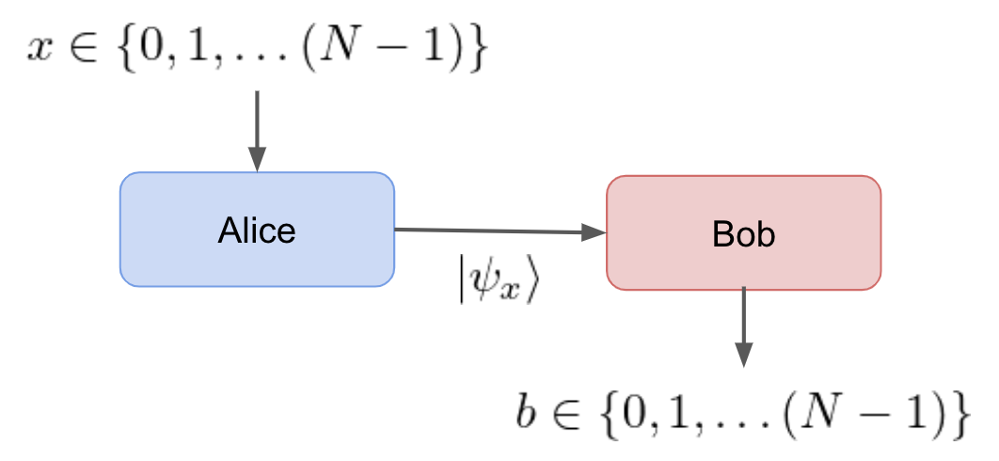

Dimension Witnesses as a Device-Independent Test¶
A simple state discrimination problem can be used as a device-indpendent test to verify qubit dimension. The scenario is simple:
- Alice receives an input x\in\{0,1,\dots,N-1\} and encodes it in a quantum state |\psi_x\rangle.
- |\psi_x\rangle is sent to Bob via a quantum Channel.
- Bob measure the state with a POVM and outputs the results, b\in\{0,1,\dots,N-1 \}

The scenario can be considered as a game where Bob tries to guess Alice's input x based on |\psi_x\rangle. Given that input x is drawn from a uniform random distribution Bob's guessing success probability bounded,
where N is the number of inputs and d is the hilbert space dimension [1]. For the described scenario, this bound is tight for both quantum and classical communication systems. The fact that Quantum and Classical share the bound means that this test is not meaningful for distinguishing quantum devices from classical. However, it can be used to measure the Minimal dimension of a quantum channel.
Minimimal Classical Dimension¶
Before implementing any sort of quantum communications protocol, it will be important verify that the connected channel is noise free and whether it has a sufficient information capacity for running a proposed protocol. This can be done by sending classical states in the computational basis.
Consider the described scenario where N=4 and d=4 (2-qubits). The maximal success probability is 1 and this is achieved by sending classical states in the computational basis, \{|00\rangle, |01\rangle, |10\rangle,|11\rangle \}. Bob measures in the computational basis and is able to decode the state correctly. If Alice does not have the ability to send two qubits, then the bound will drop to p_{\text{succ}} = 1/2. In the case where Alice does note send any qubits, d=1 and Bob simply guesses the result achieving p_{\text{succ}} = 1/4. Notice that qubits still score better than no communication.
In this test, a pass verifies the minimal dimension because any higher dimensional hilbert space could be used to reproduce the same results. A failure means that the channel may be too noisy to or that Alice does not have the capability of preparing two-qubit states. The same argument could be applied to Bob's measurements.
Ideal Device-Independent Tests for Quantum Dimension¶
An ideal device-independent test for identifying quantum technology requires a quantum Bell violation. If Bob is given an input y\in \{0,1,\dots,(Y-1)\} there exists quantum communication prototocls which outperform a classical system of the same system [1]. Quantum bell violations do not imply that more information is being communicated because Holevo's Bound limits the communication capacity of the channel [2]. The test we use for quantum measurement incompatibility on qubit states is an example of the Bell violations described in [1,3].

The quantum Bell violations can be used to perform ideal device-independent dimensionality tests. The test procedure would be:
- Demonstrate quantum violation for qubit.
- Demonstrate quantum violation for qutrit.
- Demonstrate quantum violation for 2-qubits.
- and on...
The test would be able to verify the minimal quantum dimension for the bipartite communication scenario. If the bipartite system fails to violate, then the system should not be considered quantum. A non-violation could occur in the presence of noise or by Alice/Bob not being able to process the tested dimension. This technique of testing states of increasing dimension has been experimentally implemented [3].
References¶
[1] Brunner, Nicolas, Miguel Navascués, and Tamás Vértesi. "Dimension witnesses and quantum state discrimination." Physical review letters 110.15 (2013): 150501.
[2] Holevo, Alexander Semenovich. "Bounds for the quantity of information transmitted by a quantum communication channel." Problemy Peredachi Informatsii 9.3 (1973): 3-11.
[3] Hendrych, Martin, et al. "Experimental estimation of the dimension of classical and quantum systems." Nature Physics 8.8 (2012): 588-591.